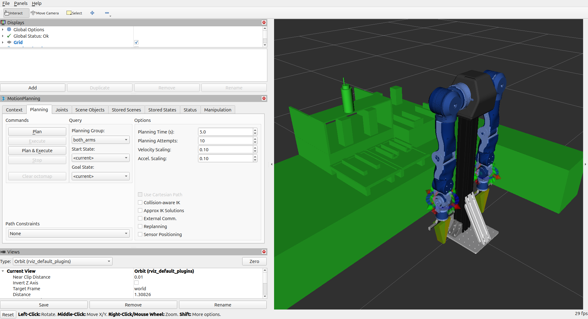
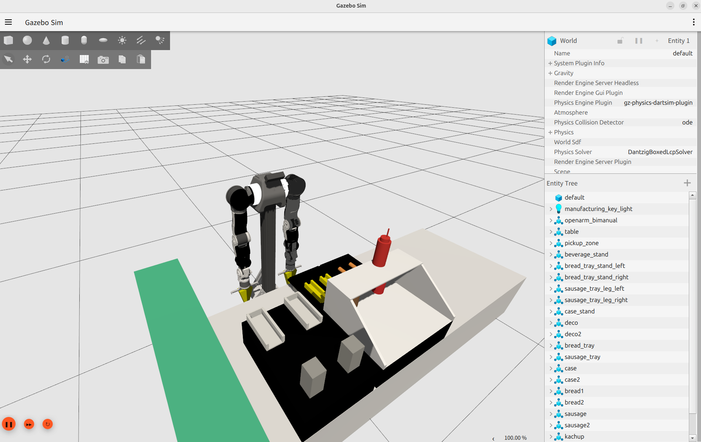
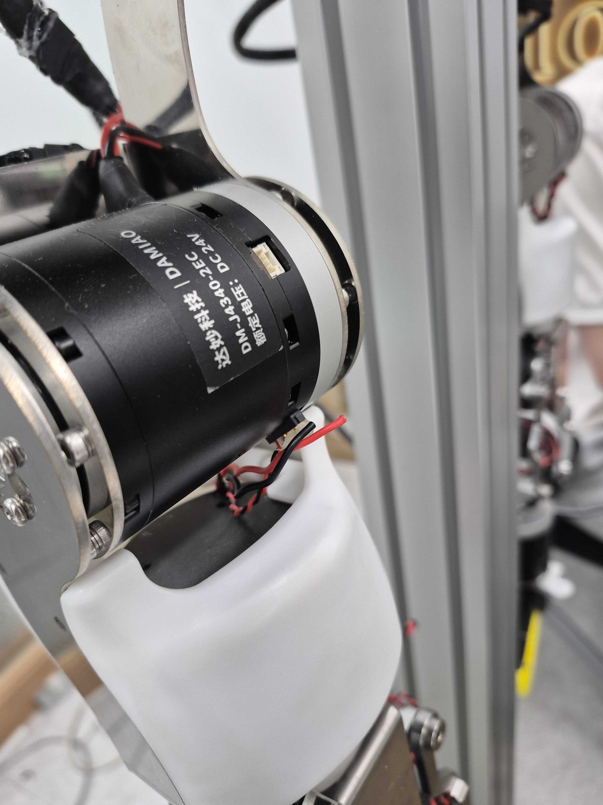
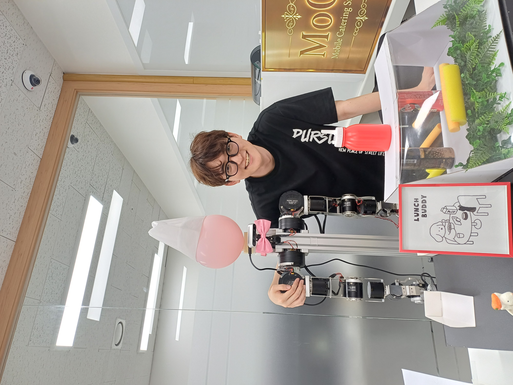
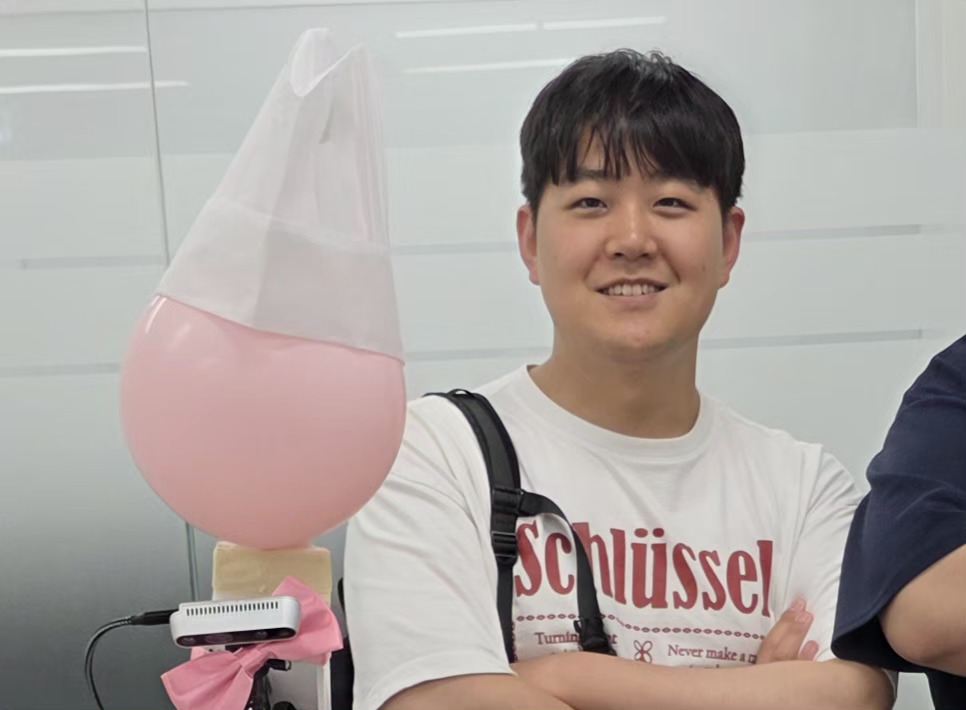
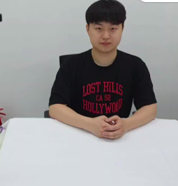

식음료 제조 기능
- 주문 기반 음료·간식 제조
01 / 기획

02 / 설계

03 / 주요 기능
키오스크 주문
테이블 웹 주문
음성 주문 시연
03 / 주요 기능
인식 → pose → 실행

03 / 주요 기능


03 / 주요 기능

① 케이스 집기

② 빵 배치

③ 소시지 배치

④ 케첩 도포
03 / 주요 기능

① 빵 배치

② 소시지 배치

③ 케첩 도포
03 / 주요 기능

Gazebo 콜라 제공 검증

실물 커피 제공 검증
03 / 주요 기능

픽업
테이블로 이동
03 / 주요 기능
왼쪽으로 제공
제자리로 복귀
03 / 주요 기능

03 / 주요 기능

[1] 군중 탐지·그룹화
YOLOv8 탐지 · DBSCAN 그룹화

[2] 그룹 접근
최대 인원 그룹 접근 · PD 제어
03 / 주요 기능
[3] 자기소개
아바타 표정·음성 인사

[4] 미니게임
cafe_ninja 미니게임
03 / 주요 기능
[5] 메뉴 홍보
메뉴 소개·방문 유도

1인 추종
관심 대상 추종 · P+EMA

병렬: 감정 분석
전 과정 감정 분석 · 불쾌 시 abort
04 / 주요 기술
Vision 인식
Gazebo 검증
제조 동작
음료 제공
04 / 주요 기술

Gazebo 환경 부재

URDF·description·launch 구성
04 / 주요 기술

팔 낙하·trajectory 불안정

dynamics·trajectory 조건 보정
04 / 주요 기술

URDF·실물 형상 불일치

실물 그리퍼 모델링·URDF 반영

collision·TCP 기준 보정
04 / 주요 기술


케이스·전원선 마찰로 단선
오른팔 비활성화·왼팔 단독 진행
04 / 주요 기술


데이터 다양성 + 학습 스케일링으로 모션 안정화
04 / 주요 기술
기존: Language Prompt

최종: Vision Context


04 / 주요 기술

과제 1 - 내비 오차

과제 2 - 조명 Flicker
최종 Pick 성공률 90%+
04 / 주요 기술
작은 흔들림은 걸러내고 천천히 보정

04 / 주요 기술
좁은 통로 · 경로 생성 실패
골 포즈 · 정렬 실패
후미 충돌 · 장애물 접촉
외벽 충돌 · 코스트맵 중단
04 / 주요 기술
RViz · home → t03
RViz · t03 → home
04 / 주요 기술
충돌 상황
05 / 결론



